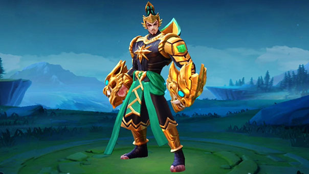

Gatotkaca
ROAMER / TANK SPESIALIST

 Base Turet, Indonesia
Base Turet, Indonesia +62 12345678910
+62 12345678910 tanksejati@winstreak.com
tanksejati@winstreak.com
RINGKASAN
Roamer profesional dengan pengalaman lebih dari 5 tahun menjaga core yang egois dan marksman yang hobi maju
sendiri. Memiliki dedikasi tinggi dalam membuka map, body block, dan mati paling depan demi kemenangan tim.
Berhasil mengantarkan banyak pemain tidak kompeten naik rank tanpa mereka sadari kontribusi saya. Siap mengabdi
kembali di Land of Dawn dengan mental baja dan sinyal stabil.
KETERAMPILAN
Teknis
- Map awarness tingkat dewa
- Rotasi tanpa disuruh
- Zoning musuh sampe base
- Bukain semak-semak berbahaya
- Gak pernah recall
- Spam "request the backup" 20x per menit
Non Teknis
- Sabar dibacotin tim toxic
- Komunikasi lewat ping karena chat percuma
- Manajemen emosi saat core nyalahin roamer
- Insting kabur saat war kalah
- Kemampuan membaca draft pick yang aneh
PENGALAMAN KERJA
2018 - Warior & Elite
PT. Belajar Arti Kekalahan
- Mengenal arti ditinggal tim saat war
- Belajar turet itu penting(katanya)
- Sering AFK karna wifi(tetangga) sering error
2020 - Master & Grandmaster
PT. Mulai Paham Map Tapi Tim Tidak
- Mulai paham pentingnya rotasi
- Sering mati sia-sia demi teman yang kabur
- Pertama kali menyadari roamer selalu disalahkan
2022 - Epic
PT. Draft Pick Gak Masuk Akal
- Menghadapi 4 marksman 1 tim
- Sempet pengen ganti role tapi selalu S5
- Mental mulai ditempa pemain egois
2024 - Legend
PT. Sabar Tanpa Batas
- Mengusai seni buka map sendirian
- Menjadi korban core yang farming 15menit
- Sering MVP di tim yang kalah
2025 - Sekarang (Mythic Honor)
PT. Roamer Disalahkan Selamanya
- Inisiasi war, mati duluan, disalahkan terakhir
- Mengantarkan random player menuju kemenangan dengan pengorbanan pribadi
- Menguasai hero tank, support, dan hero yang tidak mau dipakai orang lain
PENDIDIKAN
2015-2018
SMK Kehidupan
Jurusan Ketahanan Mental, Sabang
2012-2015
SMP Kesabaran, Jakarta
2006-2012
SDN Uji Nyali, Merauke